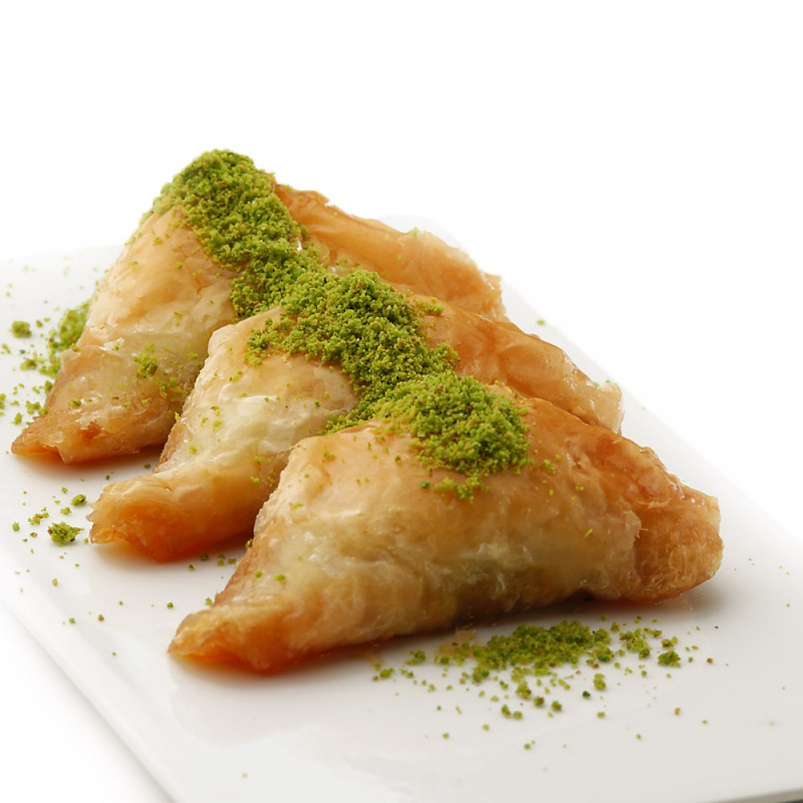
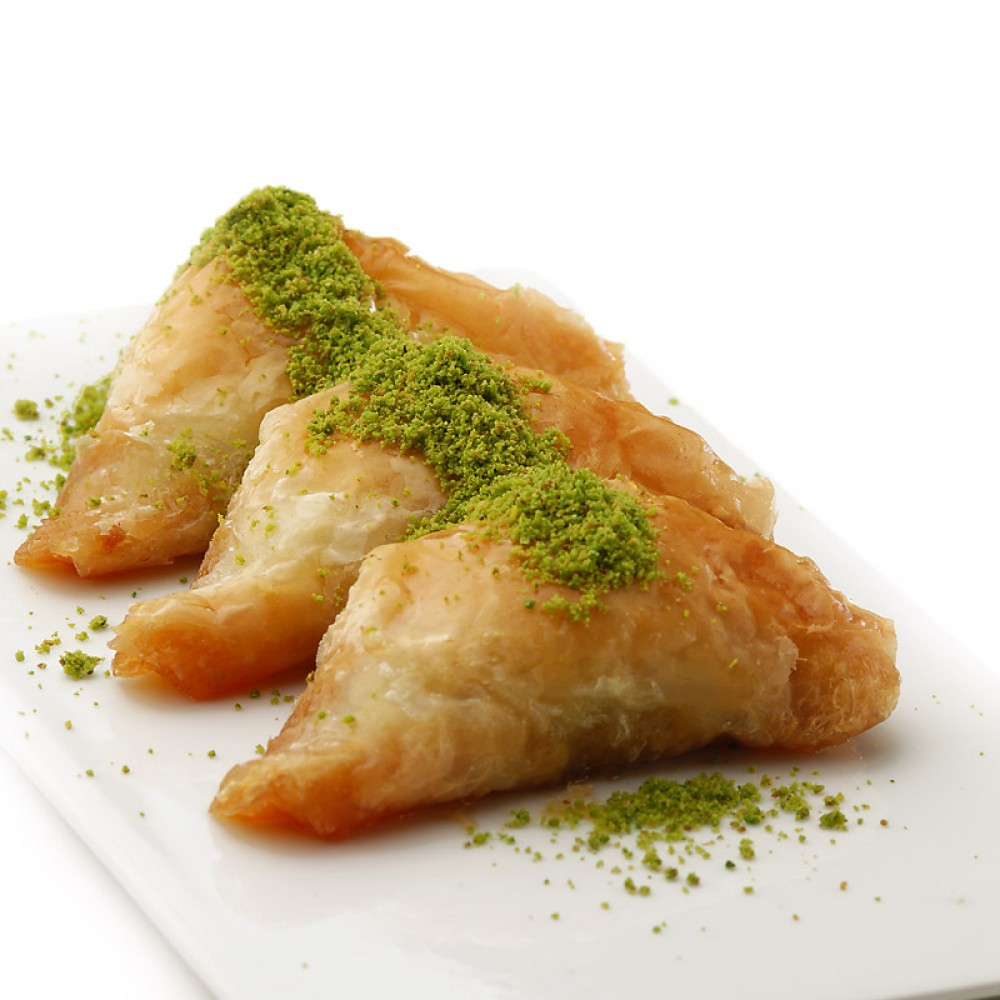

Şöbiyet, Türk mutfağında ve Ortadoğu mutfağında baklavaya benzeyen bir tatlıdır. Muska şekli olmasıyla baklavadan ayrılmaktadır. Kaymakla servis edilebilir.
Şöbiyet, Türk mutfağında ve Ortadoğu mutfağında baklavaya benzeyen bir tatlıdır. Muska şekli olmasıyla baklavadan ayrılmaktadır. Kaymakla servis edilebilir.
Hazırlanma Süresi: 45 Dakika
Pişirme Süresi: 40 Dakika
Kaç Kişilik: 7 Kişilik
Telefon: 0346 999 9999
Email: info@sobiyettarifi.com